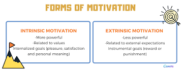
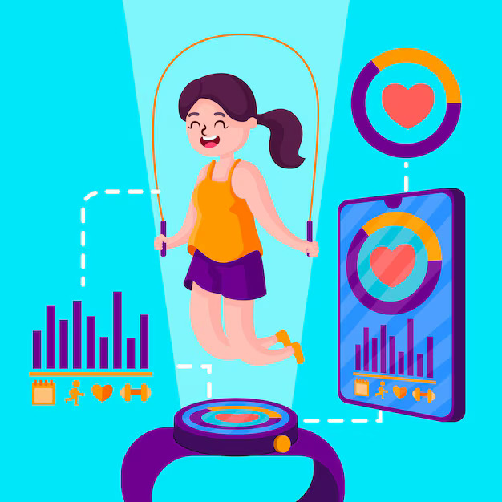
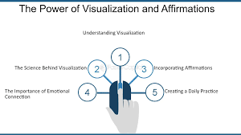

Understanding the science of motivation is key to sticking with fitness goals. Motivation can be influenced by various psychological and physiological factors, and leveraging this knowledge can help you stay committed to your fitness regimen. Here’s a detailed look at how motivation works and strategies to sustain it:
- Understanding Motivation

- Types of Motivation
- Intrinsic Motivation:Driven by internal rewards and personal satisfaction, such as the joy of completing a workout or achieving a fitness milestone.
- Extrinsic Motivation: Driven by external rewards or outcomes, such as weight loss, improved appearance, or social recognition.
- Theories of Motivation
- Self-Determination Theory (SDT):Emphasizes the role of autonomy, competence, and relatedness in fostering intrinsic motivation. When people feel they have control over their actions, believe they are capable, and feel connected to others, they are more likely to stay motivated.
- Expectancy Theory: Suggests that motivation is based on the expectation of achieving a desired outcome. If you believe that your effort will lead to success, you’re more likely to be motivated to stick with your goals.
- Goal-Setting Theory: Proposes that specific, challenging goals lead to higher performance. Setting clear and attainable goals can enhance motivation by providing direction and a sense of purpose.
- Psychological Strategies
- Set SMART Goals
- Specific:Define clear and precise goals (e.g., “Run 5 kilometers in 30 minutes”).
- Measurable: Ensure you can track progress (e.g., using a fitness app).
- Achievable: Set realistic goals that are attainable given your current fitness level.
- Relevant: Goals should align with your personal values and fitness aspirations.
- Time-Bound: Set a deadline to achieve your goals (e.g., “In 3 months”).
- Create a Plan
- Break It Down:Divide your main goal into smaller, manageable tasks or milestones.
- Schedule Workouts : Treat your workouts like appointments; schedule them in your calendar.
- Monitor Progress
- Track Achievements:Use fitness trackers, journals, or apps to monitor your progress and celebrate milestones.
- Adjust Goals: Based on progress, adjust your goals to stay challenged but not overwhelmed.
- Build Habits
- Consistency:Develop a routine by exercising at the same time each day.
- Extrinsic Motivation: Combine your workout with another routine activity (e.g., exercise after work).
- Environmental and Social Factors
- Create a Supportive Environment
- Gym or Home Setup: Choose a convenient location for your workouts, whether it’s a gym or a home setup.
- Remove Barriers: Identify and address obstacles that prevent you from exercising (e.g., prepare workout clothes the night before).
- Social Support
- Workout Buddy: Find a friend or family member to exercise with, which can increase accountability and motivation.
- Join Groups: Participate in fitness classes or online communities to connect with like-minded individuals.
- Overcoming Common Challenges
- Addressing Plateaus
- Variety : Change your workout routine to avoid boredom and stimulate different muscle groups.
- Reevaluate Goals: Set new, more challenging goals to reignite motivation.
- Dealing with Setbacks
- Forgive Yourself : Understand that setbacks are part of the process. Forgive yourself and refocus on your goals.
- Analyze and Adjust: Assess what led to the setback and adjust your plan accordingly.
- Leveraging Reward Systems

- Enjoyment: Focus on the enjoyment of the activity itself, such as the endorphin boost from exercise.
- Personal Achievement: Reflect on how you feel after a workout and the progress you’ve made.
- Extrinsic Rewards
- Incentives: Use rewards like a new workout outfit or a day off to celebrate achievements.
- Recognition: Share your progress with friends and family to gain positive reinforcement.
- Cognitive Techniques

- Visualization
- Positive Imagery: Visualize yourself achieving your fitness goals and experiencing the associated benefits.
- Mental Rehearsal: Practice mentally rehearsing your workouts and the steps needed to succeed.
- Affirmations
- Positive Statements: Use positive affirmations to reinforce your commitment and self-belief (e.g., “I am strong and capable”).
- The Role of Physical Health
- Understanding Physical Fatigue
- Rest and Recovery: Ensure you get adequate rest to avoid burnout and injury.
- Nutrition: Fuel your body with proper nutrition to support your workouts and recovery.
- Manage Stress
- Stress Reduction: Incorporate relaxation techniques such as mindfulness or meditation to manage stress, which can affect motivation.